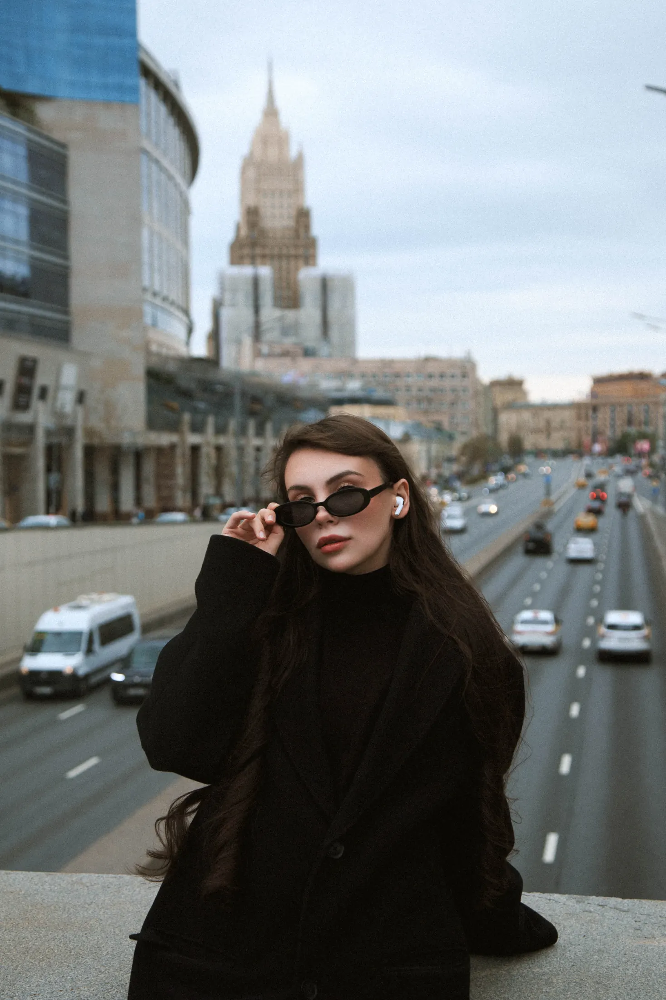
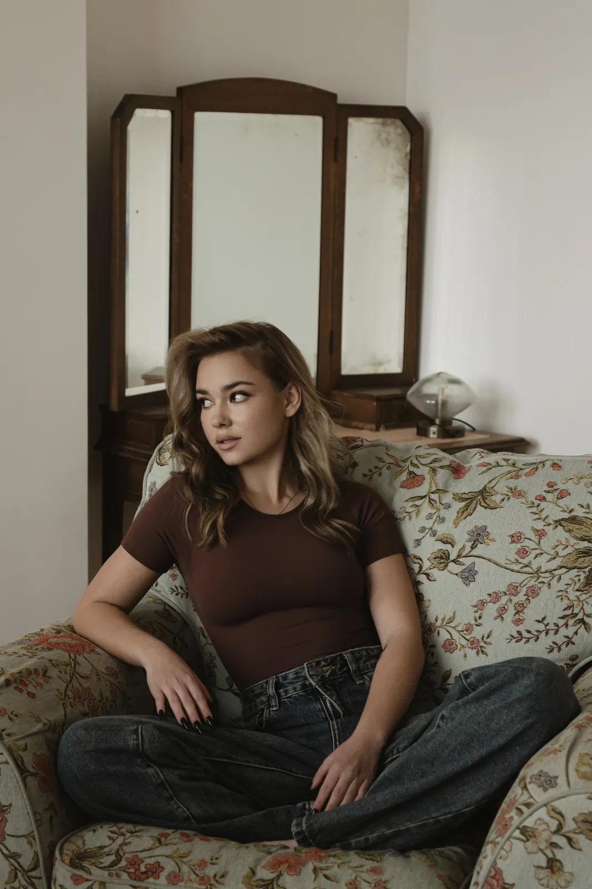
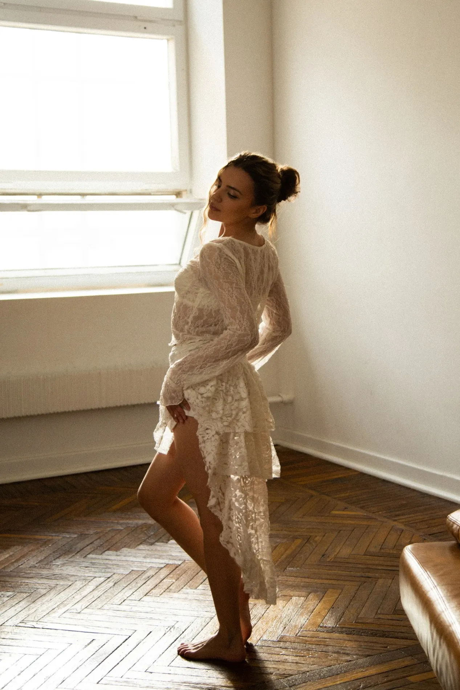

Экспресс съемка
8 000 ₽
40 минут
Для контента, портретов или быстрого обновления фотографий.
Экспресс съемка
Коммерческий фотограф · Москва
Екатерина Ганичева — фотограф, который помогает раскрыться в кадре, почувствовать уверенность и сохранить состояние, эмоции и естественность.
Коммерческий фотограф с 2020 года
Профессионально занимаюсь фотографией с 2020 года. Специализируюсь на индивидуальных съемках, где важно не только получить красивые кадры, но и сохранить атмосферу, эмоции и естественность.
Для меня фотография — это про человека, состояние и внимание к деталям. Я помогаю с позированием, подготовкой и образами, чтобы вы чувствовали себя уверенно и свободно перед камерой — даже если это ваш первый опыт.
Портфолио собрано как визуальный ритм: портреты, контент, индивидуальные и коммерческие съемки, студия и городская среда.
В каждом формате есть сопровождение, помощь с позированием и внимание к образу.
Экспресс съемка
40 минут
Для контента, портретов или быстрого обновления фотографий.
Экспресс съемкаИндивидуальная съемка стандарт
1 час
Комфортный формат для полноценной фотосессии с несколькими образами.
Выбрать стандартИндивидуальная съемка Plus
2 часа
Для глубоких и разнообразных съемок, нескольких локаций и спокойного творческого процесса.
Выбрать PlusМы заранее обсуждаем задачу, настроение, образ и локацию. На съемке я подсказываю, как встать, куда смотреть и как двигаться, чтобы кадр оставался естественным.
Разбираем, зачем вам съемка и какое состояние хочется сохранить.
Подбираем визуальный ритм, одежду, детали и пространство.
Я направляю позы и движение, оставляя ощущение свободы в кадре.
Кадры проходят аккуратный отбор, цвет и ретушь без потери естественности.
Вы получаете фотографии, которые можно использовать для себя, бренда и контента.

Помогаю с позированием на протяжении всей съемки.
Подсказываю по образам и подготовке.
Создаю спокойную и поддерживающую атмосферу.
Если у вас нет опыта перед камерой, это не проблема. Съемка строится так, чтобы вам было спокойно с самого начала.
Ничего заранее уметь не нужно. Я подсказываю позы, направление взгляда, движения и микродействия на протяжении всей съемки.
Да. Мы обсуждаем задачу, настроение и то, как фотографии будут использоваться, а затем подбираем образы и детали.
Конечно. Большая часть клиентов приходит без опыта. Я выстраиваю процесс мягко, чтобы первая съемка стала приятным опытом.
В студии, на улице, в интерьере или другой локации под задачу. Я помогу выбрать пространство, которое поддержит образ.
Срок зависит от формата и объема съемки. Точный дедлайн обсуждаем перед записью, чтобы вы понимали весь процесс заранее.
Оставьте заявку в форме или напишите в Telegram / WhatsApp. Я уточню задачу и помогу выбрать подходящий формат.

Запись на съемку
Расскажите, какую съемку вы хотите, и я помогу подобрать формат, образ и настроение.